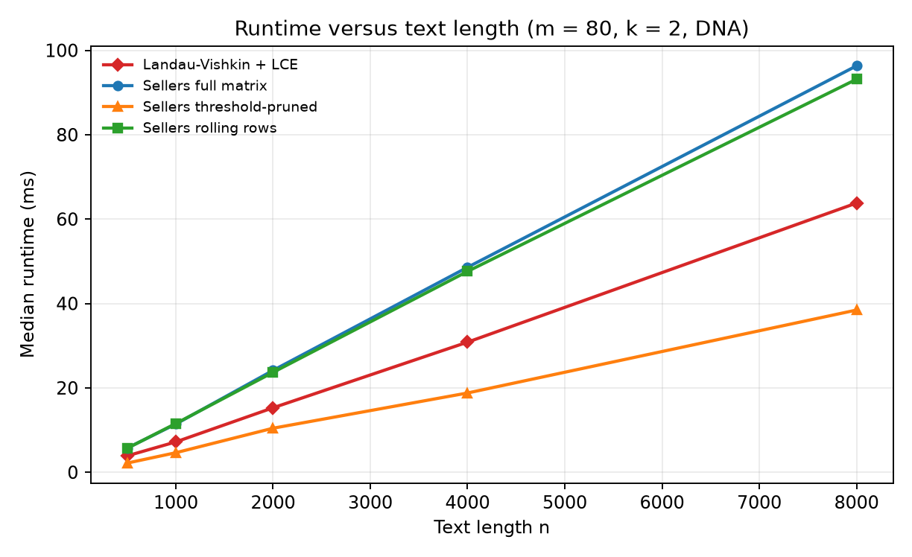
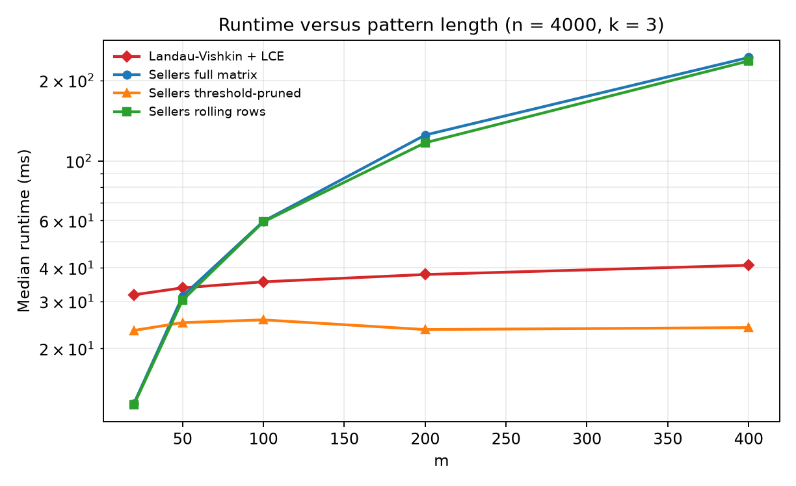
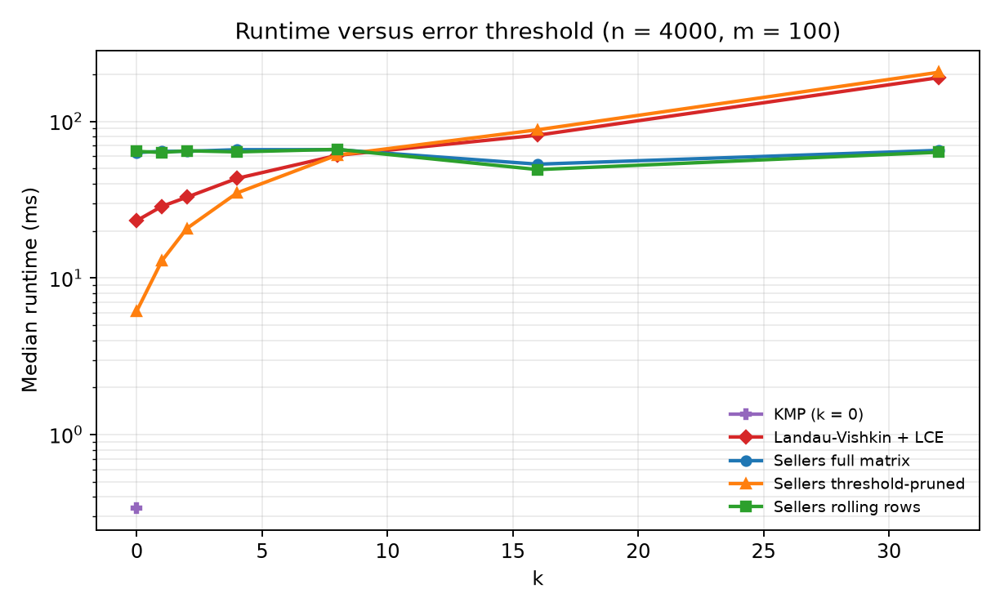
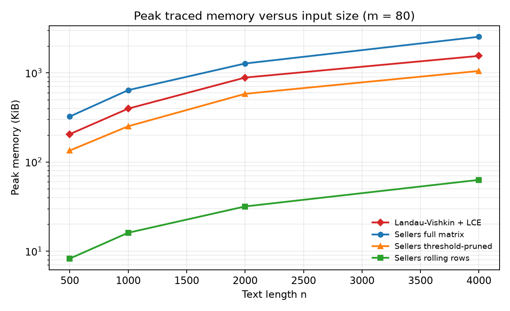
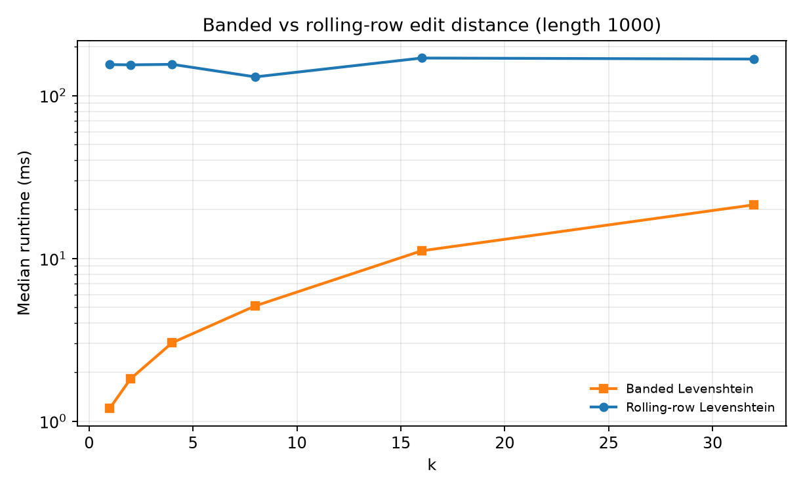
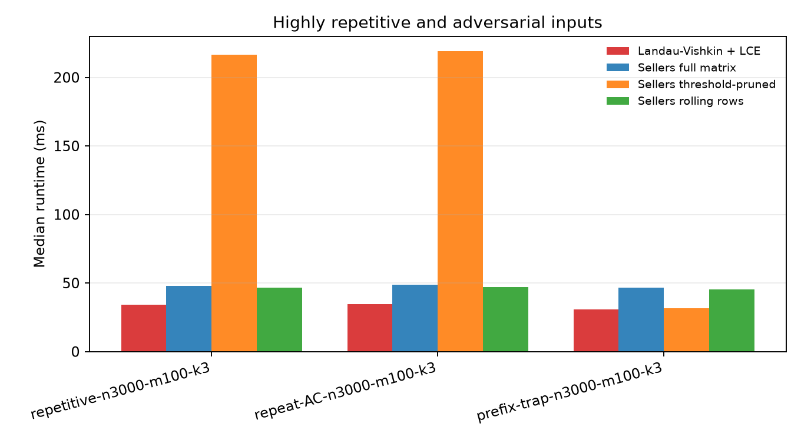

Design, Analysis, and Experimental Comparison of Algorithms
[Your name]
Text · Pattern · edit distance · error threshold
Given text T of length n, pattern P of length m, and threshold k:
≤ k(end, distance); starts are freeText: A B C X D E F G
Pattern: A B C D E F
k = 0: no match
k = 1: end 7, distance 1Scan fewer DP cells or fewer diagonals.
Keep one row, one band, or active cells only.
Exploit small k or long patterns.
k/m, pattern length, memory, alphabet, and repetitive structure.
| Method | Purpose |
|---|---|
| Naive + KMP | exact baseline, k = 0 |
| Levenshtein full / rolling | string-to-string distance |
| Banded Levenshtein | fast distance when true distance is small |
| Sellers full / rolling | semi-global approximate search |
| Threshold-pruned Sellers | safe active-cell pruning |
| Landau–Vishkin + LCE | diagonal-band search |
| Hamming | substitutions-only special case |
All matching algorithms are implemented from scratch; no heuristic pruning.
D[0][j] = 0 for every j # free start anywhere
D[i][0] = i # delete a pattern prefix
D[i][j] = min(
D[i-1][j] + 1, # deletion
D[i][j-1] + 1, # insertion
D[i-1][j-1] + (P[i-1] != T[j-1]) # match/substitution
)
report end j whenever D[m][j] <= kD[0][j] = 0 turns global alignment into substring searchk = 0 returns exactly the KMP matchesO(m) memoryFor distance ≤ k, every optimal path stays in
|i - j| ≤ kTime O(k · min(m,n)), space O(k).
T = XXXXXABC
P = ABC
k = 0The match starts far from the main diagonal. A fixed band would miss it.
This project uses banding for distance, and safe alternatives for search: threshold pruning and Landau–Vishkin.
State: farthest reach on diagonal h = column - row with e edits.
row = max(
F[e-1][h] + 1, # substitution
F[e-1][h-1], # insertion
F[e-1][h+1] + 1 # deletion
)
row += LCE(P[row:], T[row+h:])O(nk) frontier statesn < 6, m < 4, k < 4tracemallocWorkloads: planted mutations, binary/DNA/English alphabets, repetitive text, prefix traps, banded distance.






k = 0Choose the algorithm from the regime, not from a single benchmark table.
python -m asm.cli demo
python -m asm.cli validate --cases 200
python -m pytest -q
python scripts/run_experiments.pydocs/REPORT.mdasm/algorithms.pytests/test_algorithms.pyresults/Use arrow keys or PageDown to advance. Print to PDF for slides.